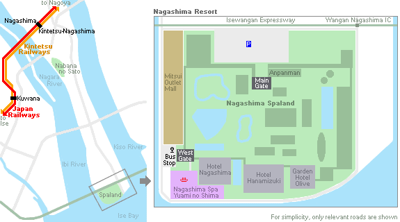
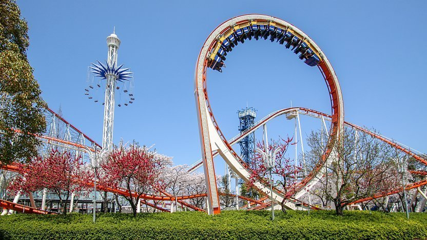
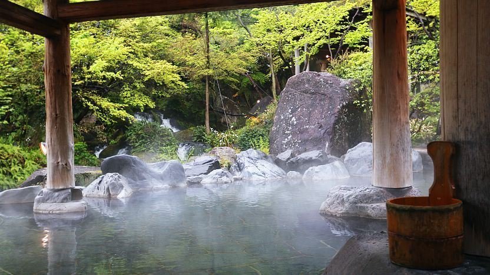
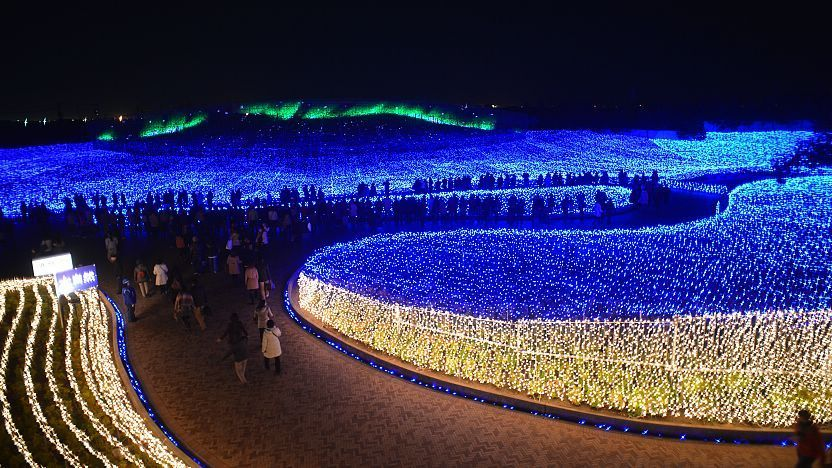

Nagashima Resort
Nagashima Resort is a major vacation destination just outside Nagoya. It is comprised of five main leisure facilities: the Nagashima Spaland amusement park, a water park, a hot spring complex, an outlet shopping mall and a flower park named Nabana no Sato. The resort is located on a long piece of land that is surrounded by rivers and the sea; fittingly, it is called Nagashima or "long island".
Nagashima Spaland, reputed to be the best amusement park for roller coasters in western Japan, is the main attraction of the resort. The park is filled with over forty rides, ranging from gentle ones suitable for children to outrageous ones for those looking to spend some exhilarating moments. Immediately noticeable even before entering the main gate is the Steel Dragon 2000, a gigantic roller coaster ride which spans the entire length of the park.
Also within the Nagashima Spaland grounds is a full-featured water park, named Joyful Waterpark. The water park is densely packed with water slides and swimming pools, including a wave pool, but is open only in the summer.
At the southwestern corner of the resort lies Nagashima Spa Yuami no Shima, a hot spring bath complex which offers many attractive indoor and outdoor baths set in man-made nature. The baths are divided into two sections for each gender with beautifully recreated scenery from the Kurobe Gorge (usually designated as the men's bath) and Oirase Stream (usually the women's bath). Also available are jacuzzis, saunas, massage services and restaurants.
Next to the main entrance to the amusement park is the Anpanman Museum, based on the popular animation and catering to younger kids.
Mitsui Outlet Park Jazz Dream Nagashima is a large outlet mall located just beside Nagashima Spaland. It offers over 300 stores, including famous foreign and domestic boutiques, stores carrying world-renowned brand names, popular sporting goods, and a plethora of other shopping options.
Located at a distance apart from the other attractions (about 15 minutes by bus from Nagashima Spaland) is the Nabana no Sato flower park. The park hosts one of the largest flower festivals in Japan during the warmer seasons. Equally outstanding are the park's winter illuminations from October to May. Of interest is Island Fuji, a unique, moving observation deck, which offers good views over the park.
